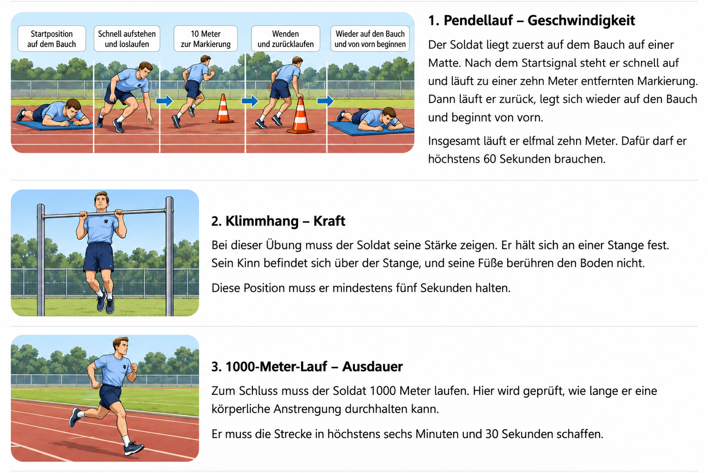

Der Basis-Fitness-Test der Bundeswehr
Niveau A2–B1 · Lesetext und Übungen
Lesetext
Was ist der Basis-Fitness-Test?
Soldaten müssen körperlich fit sein. Sie tragen oft schwere Ausrüstung, marschieren über längere Strecken und müssen manchmal schnell reagieren. Deshalb ist Sport ein wichtiger Teil der militärischen Ausbildung.
Aber wie kann man die körperliche Leistung messen?
Dafür gibt es bei der Bundeswehr den Basis-Fitness-Test (BFT). Er wurde im Jahr 2010 eingeführt und soll zeigen, wie leistungsfähig ein Soldat ist.
Anders als beim Deutschen Sportabzeichen gibt es beim BFT nur drei Übungen. Dabei werden vor allem drei körperliche Fähigkeiten geprüft: Geschwindigkeit, Kraft und Ausdauer.
Welche Übungen gehören zum BFT?

Alle drei Übungen müssen innerhalb von 90 Minuten durchgeführt werden. Um den BFT zu bestehen, muss der Soldat in jeder Übung die Anforderungen erfüllen. Eine besonders gute Leistung in einer Übung kann eine zu schlechte Leistung in einer anderen Übung nicht ausgleichen.
Wie oft müssen Soldaten den BFT machen?
Grundsätzlich soll jeder Soldat den BFT einmal im Jahr ablegen. Bereits während der Grundausbildung lernen die Rekruten die drei Übungen kennen.
Die Leistungen werden mit einer Stoppuhr gemessen und anschließend in Punkte umgerechnet. Je besser die Ergebnisse sind, desto mehr Punkte erhält der Soldat.
Müssen Männer und Frauen dieselben Anforderungen erfüllen?
Beim BFT gelten für Männer und Frauen dieselben Mindestanforderungen. Auch das Alter spielt für das Bestehen zunächst keine Rolle.
Bei der Berechnung der Punkte gibt es aber Unterschiede. Frauen erhalten bestimmte Bonuspunkte. Ältere Soldaten bekommen ab einem bestimmten Alter ebenfalls einen Bonus. So sollen die Leistungen verschiedener Personen besser miteinander verglichen werden können.
Das ist ein wichtiger Unterschied zum Deutschen Sportabzeichen. Dort gelten bereits für die einzelnen Übungen unterschiedliche Anforderungen je nach Alter und Geschlecht.
Was passiert, wenn ein Soldat den BFT nicht besteht?
Nicht jeder Soldat schafft den BFT beim ersten Versuch. Manchmal fehlt die Kraft, manchmal ist die Ausdauer zu gering.
Wer die Mindestanforderungen nicht erfüllt, hat den Test nicht bestanden. Er kann ihn nach sechs Wochen wiederholen. In dieser Zeit sollte er gezielt trainieren, um seine Leistung zu verbessern.
Wenn ein Soldat den BFT wiederholt nicht besteht, kann das weitere Folgen haben. Seine körperliche Leistungsfähigkeit muss möglicherweise genauer überprüft werden. Auch für die Beurteilung seiner dienstlichen Leistungen kann das Ergebnis wichtig sein. Das bedeutet aber nicht, dass ein Soldat automatisch entlassen wird, wenn er den BFT nicht besteht.
Sind die Anforderungen in den letzten Jahren leichter geworden?
Früher gab es bei der Bundeswehr andere Sporttests. Seit 2010 wird der BFT verwendet. Er besteht aus drei Übungen und lässt sich relativ einfach durchführen.
Manchmal wird behauptet, dass die Bundeswehr ihre sportlichen Anforderungen gesenkt hat, weil viele Menschen heute weniger fit sind.
Aber stimmt das wirklich?
Die Bundesregierung erklärte 2020, dass die Einführung des BFT für Bewerber nicht automatisch eine Senkung der Anforderungen bedeutete. Die Mindestleistungen dieses Tests waren damals seit seiner Einführung nicht verändert worden.
Auch die aktuell veröffentlichten Mindestanforderungen entsprechen weiterhin den bekannten Werten. Man kann deshalb nicht einfach behaupten, dass der BFT in den letzten Jahren immer leichter geworden ist.
Haben die meisten Soldaten eine positive Einstellung zum Sport?
Für die Bundeswehr ist Sport sehr wichtig. Soldaten sollen regelmäßig trainieren, damit sie körperlich leistungsfähig bleiben.
Aber haben auch die meisten Soldaten eine positive Einstellung zum Sport?
Das lässt sich nicht so einfach beantworten. Viele Soldaten treiben gern Sport und möchten ihre Leistungen verbessern. Andere finden das Training anstrengend oder haben wenig Freude am Laufen und an Kraftübungen. Verlässliche aktuelle Zahlen darüber, wie viele Soldaten Sport mögen, liegen hier nicht vor.
Eine positive Einstellung kann aber helfen. Wer regelmäßig trainiert und nicht sofort aufgibt, verbessert oft seine Ausdauer, seine Geschwindigkeit und seine Kraft.
Dabei ist nicht jeder Soldat gleich sportlich. Entscheidend ist, dass er die notwendigen Anforderungen erfüllt und bereit ist, an seiner Fitness zu arbeiten.
Denn körperliche Fitness ist für Soldaten nicht nur ein persönliches Ziel, sondern auch eine wichtige Voraussetzung für ihren Beruf.
Übung 1 – Wortschatz
Ergänzen Sie das fehlende Wort. Tippen Sie das Wort in das Feld ein. Die Buchstaben in Klammern sind durcheinander. Achten Sie auf die Groß- und Kleinschreibung.
Übung 2 – Richtig oder falsch?
Lesen Sie die Aussagen. Wählen Sie Richtig oder Falsch.
Übung 3 – Multiple Choice
Welche Antwort ist richtig? Wählen Sie A, B oder C.
Übung 4 – Diskussion
Diskutieren Sie die Fragen. Begründen Sie Ihre Meinung und nennen Sie Beispiele.
1. Finden Sie es gerecht, dass Männer und Frauen dieselben Mindestanforderungen erfüllen müssen?
2. Sollte der BFT für alle Soldaten unabhängig vom Alter gleich sein?
3. Welche Folgen sollte es haben, wenn ein Soldat den BFT mehrmals nicht besteht?
4. Welche der drei Übungen finden Sie am schwierigsten? Begründen Sie Ihre Meinung.
5. Wie kann die Bundeswehr Soldaten zu regelmäßigem Sport motivieren?
Redemittel
Ich bin der Meinung, dass … · Meiner Meinung nach … · Da stimme ich Ihnen zu. · Das sehe ich anders. · Einerseits …, andererseits …